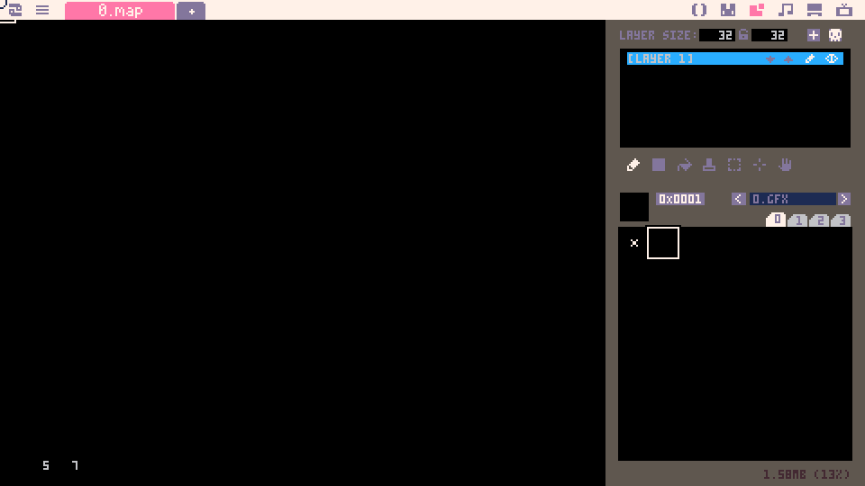
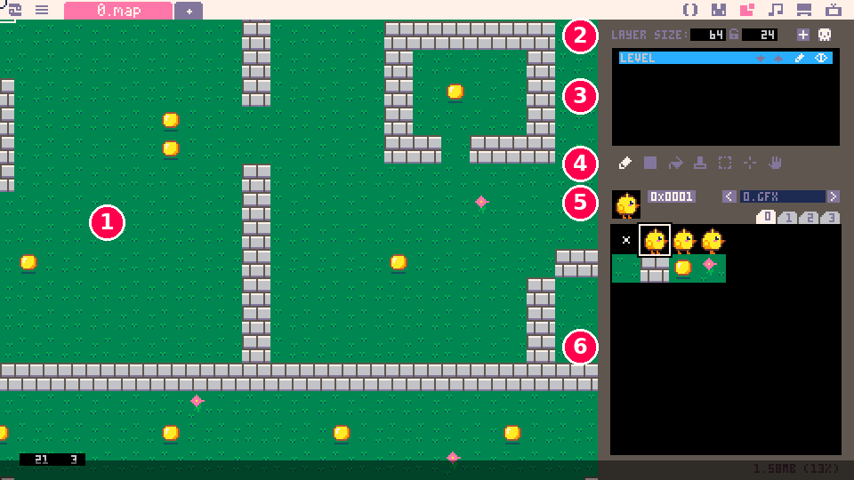
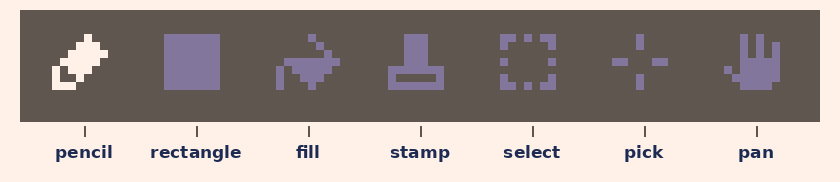
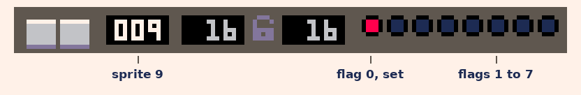

demotron / beginner basics / 10
Maps
The map editor, drawing a level with map, tiles and pixels, walls with sprite flags, and a camera that follows the player.
Tiles
Basics 9 put a character on the screen. Now it needs somewhere to be: a meadow with walls to bump into and coins to find, bigger than the screen.
We could draw a whole level with spr, one sprite at a time, but that's hundreds of lines of numbers. Games build their worlds out of tiles instead: a small set of sprites (some grass, a wall, a coin) laid out on a grid, over and over, like a mosaic. Picotron's map editor paints that grid with our sprites, and one line of code, map(), draws all of it.
In this lesson we paint a level, draw it, find out which tile the character is standing on, stop it walking through walls, and make the screen follow it around a world bigger than the screen.
We use the chick from Basics 9, plus four sprites made to be tiles: grass in sprite 8, a stone wall in sprite 9, a coin in sprite 10 and a flower in sprite 11. Draw yours in the same places (the first four squares of the sheet's second row), each one filling its whole 16 by 16 square, so that neighbouring tiles meet with no gaps.
The map editor
Click the map icon at the top right of the screen, the third one along, right after the sprites icon. In a new cartridge the map editor looks like this:

The big black area is the map, still empty. Here's the same editor with our level in it:

- The map, where you paint. Each square on it is one tile.
- The layer size: how many tiles wide and tall the map is. A new map is 32 by 32 tiles. Ours is 64 by 24; click a number and type a new one to change it.
- The layers. A map can have several layers stacked on top of each other (up to six), each with a name and buttons to move it up or down, rename it, and hide it (the eye). This lesson keeps to one layer.
- The tools.
- The tile you're painting with: its picture, its number, and which sprite file it comes from (
0.gfx, the file the sprites are in). - The sprite sheet: the very same sprites as in the sprite editor. Every sprite is also a tile.
Here are the tools up close:

To paint, click a sprite in the sheet to pick it as the tile, then click or drag on the map with the pencil. The rectangle tool fills a whole rectangle with the tile in one go, which suits walls and floors, and fill floods an area, like the paint bucket in the sprite editor. A few more things that help:
- Right-click a tile on the map to pick it up and paint with it, the same way right-click picks a colour in the sprite editor.
- Hold Space and drag to move around the map, and use the mouse wheel to zoom in and out.
- To rub tiles out, pick sprite 0 (the little x) and paint with it. Sprite 0 is how a map says "no tile here": it's never drawn.
The tile's number is shown as 0x0001, which means 1. That's hexadecimal, a way of writing numbers that programmers use a lot, where 0x000a means 10 and 0x000b means 11. Click the number to switch to ordinary numbers.
One more thing before painting: the map takes its tile size from sprite 0. Sprite 0 is 16 by 16, so every tile is 16 by 16 pixels, which is another reason to leave sprite 0 just as it is.
Now paint a level. Fill it with grass first (the rectangle tool makes that quick), then add some walls, a few coins and some flowers. Leave a clear space for the character to start in, around the tile 14 across and 8 down (the pair of numbers at the bottom left shows which tile the mouse is over).
Drawing the map
Here's the walking chick from Basics 9, with one new line:
1x, y = 224, 128
2left = false
3
4function _update()
5 if btn(0) then
6 x -= 2
7 left = true
8 end
9 if btn(1) then
10 x += 2
11 left = false
12 end
13 if btn(2) then y -= 2 end
14 if btn(3) then y += 2 end
15end
16
17function _draw()
18 cls()
19 map()
20 spr(1, x, y, left)
21endmap() draws the whole map, starting from the top-left corner of the screen. Each tile is 16 pixels, so the tile 14 across and 8 down is drawn at pixel 14 × 16 = 224 across and 8 × 16 = 128 down. That's where the chick starts, so it begins exactly on top of that tile. Order matters, as it does with shapes: the map first, so it covers the background, and the chick after it, so it walks on top.
Our map is bigger than the screen, so this shows only its top-left corner, 30 tiles across and a little under 17 down; the camera section gets to the rest. And the chick walks straight over the walls, because to the map a wall is just a picture. The next two sections fix that.
Tiles and pixels
To stop at walls, the code has to ask which tile is the chick on? mget(tx, ty) answers it. Give it a tile's position on the map (tx tiles across and ty tiles down) and it returns the number of the sprite painted there.
1x, y = 224, 128
2left = false
3
4function _update()
5 if btn(0) then
6 x -= 2
7 left = true
8 end
9 if btn(1) then
10 x += 2
11 left = false
12 end
13 if btn(2) then y -= 2 end
14 if btn(3) then y += 2 end
15
16 -- which tile is the middle of the chick on?
17 tx = (x + 8) \ 16
18 ty = (y + 8) \ 16
19 tile = mget(tx, ty)
20end
21
22function _draw()
23 cls()
24 map()
25 spr(1, x, y, left)
26 -- outline that tile, and say what's in it
27 local sx, sy = tx * 16, ty * 16
28 rect(sx, sy, sx + 15, sy + 15, 7)
29 rectfill(0, 0, 479, 10, 0)
30 print("x "..x.." y "..y.." tile "..tx..", "..ty
31 .." sprite "..tostr(tile), 4, 2, 7)
32endThe chick's position is in pixels, but mget wants tiles, so we divide by 16. The \ from Basics 3 divides and rounds down, so every pixel from 224 to 239 gives tile 14, and pixel 240 starts tile 15. Adding 8 first means we ask about the chick's middle rather than its top-left corner.
Walk around and watch the numbers at the top. The white square is the tile the code is looking at: it jumps a tile at a time while the chick glides from pixel to pixel. On grass the sprite is 8, on a wall 9, and on a coin 10.
Off the edge of the map there's no tile to report, so mget answers nil, Lua's word for nothing at all. That's why the code prints it with tostr: .. can't join nil to text.
Walls and flags
Now we can get the number of the tile under any pixel, but which numbers are walls? The quick answer is if tile == 9. That works until we draw a second kind of wall (a tree, some water, a fence), and then every new kind needs another if. I'd rather mark the sprites themselves, and that's what sprite flags are for.
Every sprite has eight flags, the row of dots in the sprite editor, and each one is simply on or off. Picotron doesn't decide what they mean; we do. Our rule is "flag 0 means solid". Go to the sprite editor, pick the wall sprite, and click the first dot. It turns red to show the flag is on:

fget(n, f) asks "is flag f of sprite n on?" and answers true or false. So fget(mget(tx, ty), 0) asks "is the tile at tx, ty solid?".
1x, y = 224, 128
2left = false
3
4-- is the pixel at px, py inside a solid tile?
5function solid(px, py)
6 return fget(mget(px \ 16, py \ 16), 0)
7end
8
9-- does a 16x16 box at px, py touch a solid tile?
10function hits_wall(px, py)
11 return solid(px, py) or solid(px + 15, py)
12 or solid(px, py + 15)
13 or solid(px + 15, py + 15)
14end
15
16function _update()
17 local dx, dy = 0, 0
18 if btn(0) then
19 dx = -2
20 left = true
21 end
22 if btn(1) then
23 dx = 2
24 left = false
25 end
26 if btn(2) then dy = -2 end
27 if btn(3) then dy = 2 end
28
29 -- move across, and step back if that hit a wall
30 x += dx
31 if hits_wall(x, y) then x -= dx end
32 -- then the same for up and down
33 y += dy
34 if hits_wall(x, y) then y -= dy end
35end
36
37function _draw()
38 cls()
39 map()
40 spr(1, x, y, left)
41endThere are two small functions here (Basics 8 showed how to write our own). solid(px, py) says whether the pixel at px, py is inside a solid tile. hits_wall(px, py) asks that about all four corners of a 16 by 16 box with its top-left corner at px, py. The corners are + 15 away, not + 16, because a 16 pixel sprite covers the pixels 0 to 15 from its corner.
Then _update uses "move, then correct" from Basics 5, with tiles this time. It works out how far the arrows want to move the chick (dx across and dy down), moves it across, and if that puts the box into a wall, steps straight back. Then it does the same for up and down.
Why move across and down separately? Hold two arrows to push diagonally into a wall: the chick slides along the wall instead of stopping dead. Only the direction that hit the wall gets undone, so the other one carries on. If we moved both ways at once and stepped back from both, any diagonal touch of a wall would freeze the chick in place.
And because the chick moves 2 pixels at a time and starts on a tile, it always ends up flush against the wall, never a pixel short. (A speed of 3 wouldn't line up so neatly. It's worth trying, to see why.)
Camera
Our map is 64 tiles wide and 24 tall: 1024 by 384 pixels, much bigger than the 480 by 270 screen. To explore it, the screen has to follow the chick, and that's what camera does.
1x, y = 224, 128
2left = false
3
4-- is the pixel at px, py inside a solid tile?
5function solid(px, py)
6 return fget(mget(px \ 16, py \ 16), 0)
7end
8
9-- does a 16x16 box at px, py touch a solid tile?
10function hits_wall(px, py)
11 return solid(px, py) or solid(px + 15, py)
12 or solid(px, py + 15)
13 or solid(px + 15, py + 15)
14end
15
16function _update()
17 local dx, dy = 0, 0
18 if btn(0) then
19 dx = -2
20 left = true
21 end
22 if btn(1) then
23 dx = 2
24 left = false
25 end
26 if btn(2) then dy = -2 end
27 if btn(3) then dy = 2 end
28
29 -- move across, and step back if that hit a wall
30 x += dx
31 if hits_wall(x, y) then x -= dx end
32 -- then the same for up and down
33 y += dy
34 if hits_wall(x, y) then y -= dy end
35end
36
37function _draw()
38 cls()
39 -- follow the chick, but stop at the map's edges
40 cx = mid(0, x - 232, 64 * 16 - 480)
41 cy = mid(0, y - 127, 24 * 16 - 270)
42 camera(cx, cy)
43 map()
44 spr(1, x, y, left)
45endcamera(cx, cy) shifts everything drawn after it by cx pixels left and cy pixels up. Think of it as moving a window over the map: the map and the chick are drawn at the same places as before, and we look at a different part. Nothing else in the program changes, because the chick's x and y are still positions on the map.
To keep the chick in the middle of the screen, the window's top-left corner goes half a screen up and to the left of it: x - 232 and y - 127. (232 is half of 480, less half the chick's 16 pixels, and 127 is half of 270, less 8.)
mid (from Basics 5) stops the camera at the map's edges, so we never see past them. It can't go left of 0, or further right than the map's width less one screen: 64 × 16 - 480 = 544. Down works the same way, with the 24 tiles of height. For a map of a different size, put its own width and height in place of 64 and 24.
Walk up, along to the right past the block of wall, and down to the doorway on the right of the first room. Through it is a second room the screen couldn't show before.
Putting it together
In this lesson we learned:
- the map editor, where every sprite is also a tile
map(), which draws the whole mapmget, and\ 16to turn a pixel position into a tile- sprite flags and
fget, for marking which tiles are solid - walls, by moving across and down separately and stepping back
camera, withmidto keep it inside the map
In depth 2 has the rest of map: layers, drawing part of a map, tile sizes and the working map. Techniques 6 and 8 take walls and the camera further.
Next, Basics 11 adds sound: the sfx editor, sfx and music.
Try this
- Make the coins collectable: when the tile under the chick's middle is a coin, use
mset(tx, ty, 8)to paint grass over it, and add 1 to ascore. Print the score at the top of the screen. Once the camera starts to move, where does your score go, and why? What could you put just before theprintto fix it? - Draw a water tile and give it flag 1 (the second dot). Paint a pond, and make the chick move at half speed while its middle is on a tile with flag 1. Can it still end up flush against the walls?
- Paint a gap in a wall that's exactly one tile wide, and try to walk through it. Why is it so hard to get in? Try checking a smaller box in
hits_wall(say frompx + 2topx + 13) and walk through again. What do you notice about the walls now? - A Picotron quirk to discover: in the sprite editor, change sprite 0's size to 8 by 8 and run the map demo again. Before you do, predict what will happen. (Change it back to 16 by 16 afterwards!)
Built with Picotron 0.3.0d.